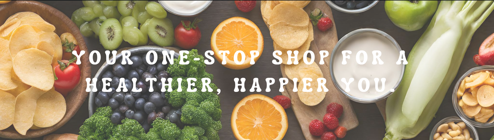
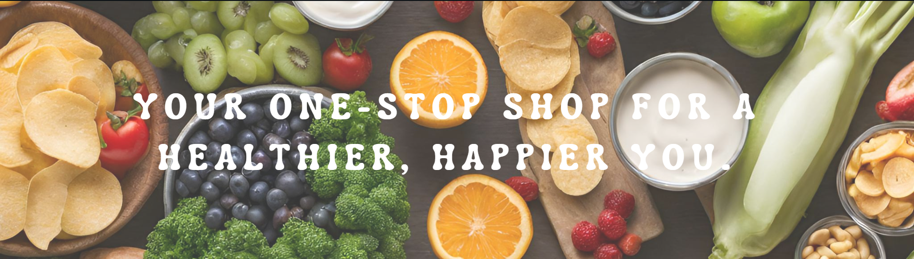

At GroceryGrid, we believe healthy living doesn't have to be complicated. We're your one-stop shop for everything you need to nourish your body and well-being.
Here's what sets us apart
- Wide Variety, Healthy Focus: We offer a curated selection of over 18,000 products, from fresh, locally sourced fruits and vegetables to wholesome pantry staples and natural personal care items.
- Convenience at Your Doorstep: Skip the crowded aisles and long lines. Order everything you need online and get it delivered fresh and convenient to your doorstep.
- Committed to Quality: We partner with trusted brands and local farmers to ensure you receive the highest quality products at competitive prices.
- Making Healthy Easy: We offer inspiration and guidance through our blog and recipe section, helping you make healthy choices a breeze.
Whether you're a busy professional, a health-conscious family, or simply looking to live a more balanced life, GroceryGrid is here to support you.
Join us on our journey to a healthier, happier you!

 
